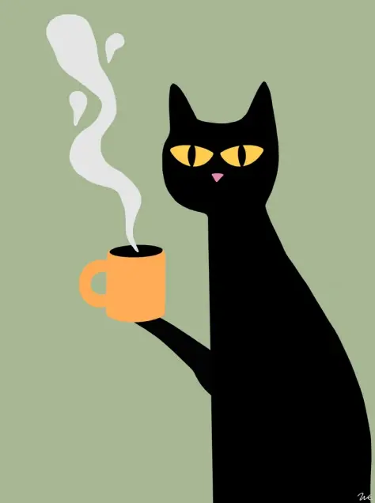
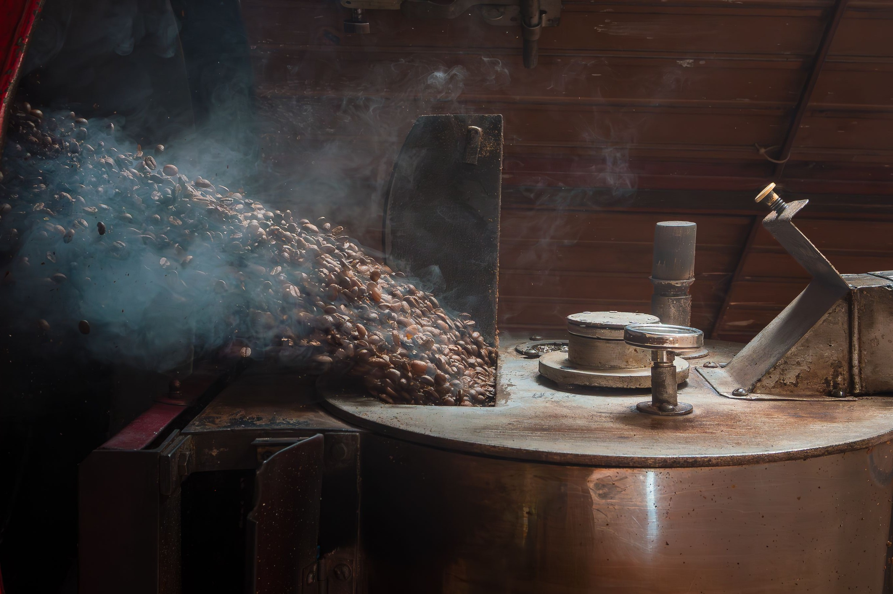
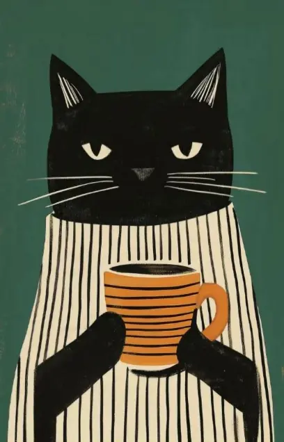

OBJETOS Y CAFÉ
La tienda Loop
Café en grano, tazas y accesorios para llevar un poco de Café Loop a casa.
Explorar la tienda
Granos de origen único seleccionados a mano, tostados en pequeños lotes y preparados con precisión para disfrutar en casa.

Café en grano, tazas y accesorios para llevar un poco de Café Loop a casa.
Explorar la tienda
Café de especialidad, encuentros y pequeños rituales para disfrutar cada taza.
Conocer nuestra filosofíaUna selección de productos para disfrutar el café también fuera de la cafetería.
Cacao, caramelo y un cuerpo equilibrado.
Cerámica de 300 ml para tu café de todos los días.
Una alternativa práctica para preparar café filtrado.
Explorá los doce cafés, objetos y accesorios de nuestra tienda.
Cada café tiene una historia. Descubrí qué hace especial a cada grano y cómo disfrutarlo en casa.
El lugar donde crece el café y su variedad influyen en el aroma, el cuerpo y el sabor.
El espresso, la prensa francesa y el filtro ofrecen distintas intensidades y texturas.
Conservá los granos en un recipiente cerrado, en un lugar fresco y seco, lejos de la luz.
Obispo Trejo 850, Nueva Córdoba, Córdoba.
Lunes a viernes de 8 a 21 h · Sábados y domingos de 9 a 22 h.
Dirección ficticia para el proyecto Café Loop.
Cómo llegar →Un buen café transforma el ritmo de todo tu día.